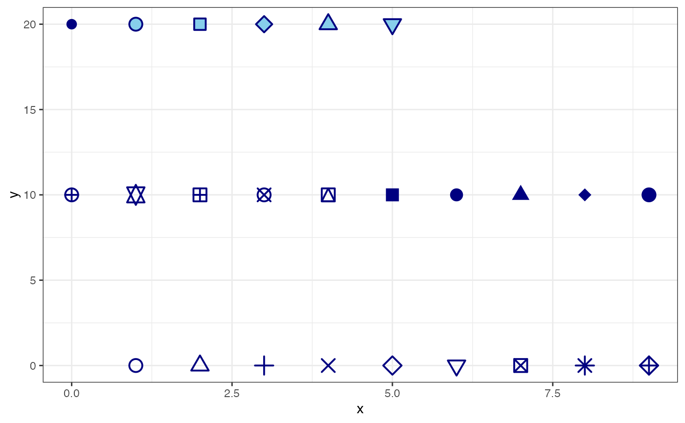
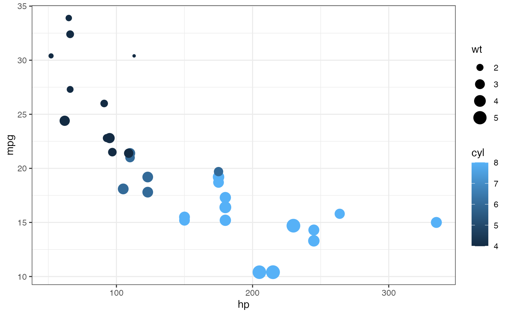
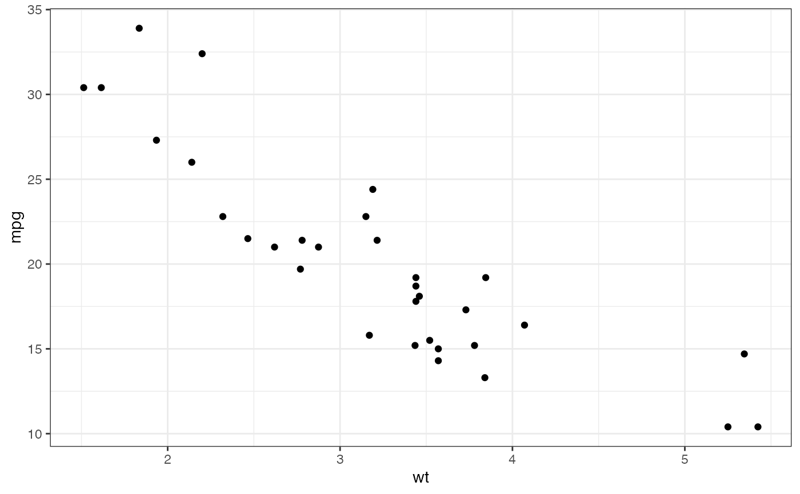
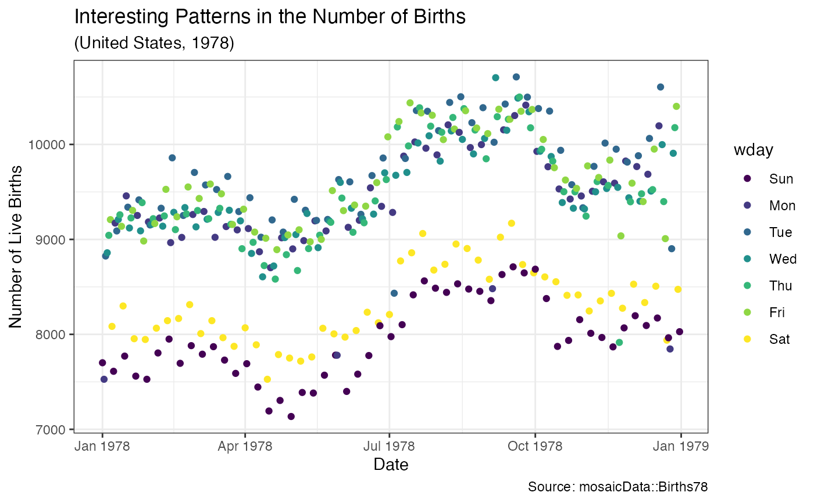
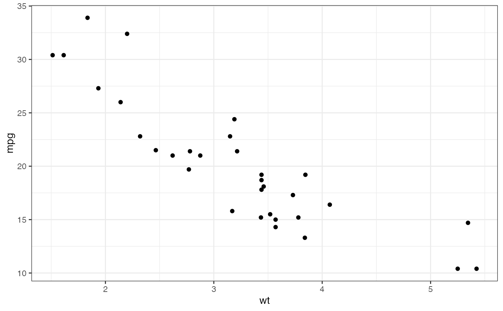
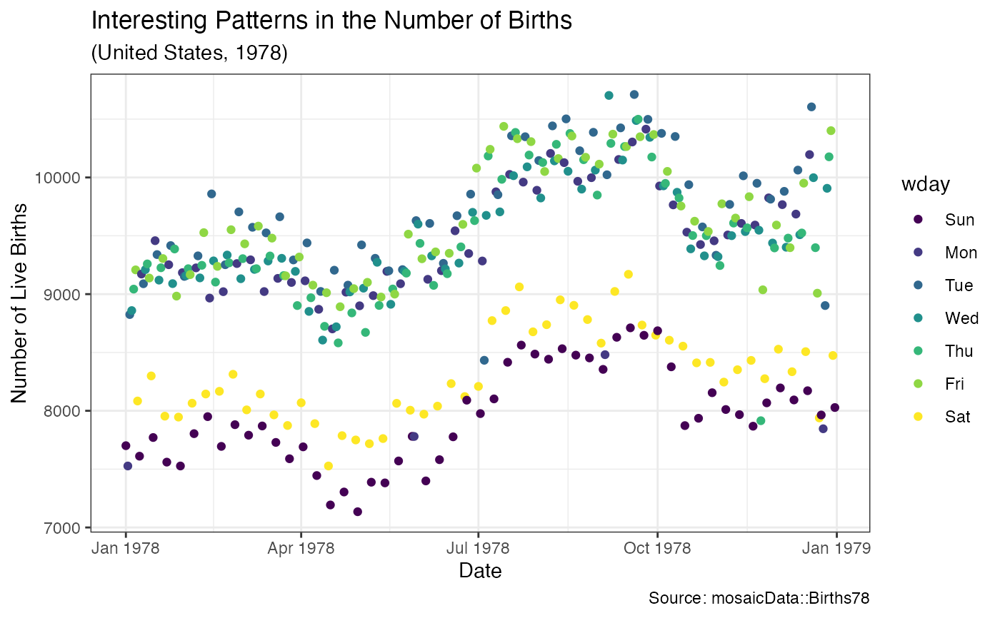

Scatterplots in ggformula.
gf_point(
object = NULL,
gformula = NULL,
data = NULL,
...,
alpha,
color,
size,
shape,
fill,
group,
stroke,
xlab,
ylab,
title,
subtitle,
caption,
geom = "point",
stat = "identity",
position = "identity",
show.legend = NA,
show.help = NULL,
inherit = TRUE,
environment = parent.frame()
)Arguments
- object
When chaining, this holds an object produced in the earlier portions of the chain. Most users can safely ignore this argument. See details and examples.
- gformula
A formula with shape
y ~ x. Faceting can be achieved by including|in the formula.- data
A data frame with the variables to be plotted.
- ...
Additional arguments. Typically these are (a) ggplot2 aesthetics to be set with
attribute = value, (b) ggplot2 aesthetics to be mapped withattribute = ~ expression, (c) attributes of the layer as a whole, which are set withattribute = value, or (d) arguments for the geom, stat, or position function.- alpha
Opacity (0 = invisible, 1 = opaque).
- color
A color or a formula used for mapping color.
- size
A numeric size or a formula used for mapping size.
- shape
An integer or letter shape or a formula used for mapping shape.
- fill
A color for filling, or a formula used for mapping fill.
- group
Used for grouping.
- stroke
A numeric size of the border or a formula used to map stroke.
- xlab
Label for x-axis. See also
gf_labs().- ylab
Label for y-axis. See also
gf_labs().- title, subtitle, caption
Title, sub-title, and caption for the plot. See also
gf_labs().- geom
A character string naming the geom used to make the layer.
- stat
A character string naming the stat used to make the layer.
- position
Either a character string naming the position function used for the layer or a position object returned from a call to a position function.
- show.legend
A logical indicating whether this layer should be included in the legends.
NA, the default, includes layer in the legends if any of the attributes of the layer are mapped.- show.help
If
TRUE, display some minimal help.- inherit
A logical indicating whether default attributes are inherited.
- environment
An environment in which to look for variables not found in
data.
Value
a gg object
Specifying plot attributes
Positional attributes (a.k.a, aesthetics) are specified using the formula in gformula.
Setting and mapping of additional attributes can be done through the
use of additional arguments.
Attributes can be set can be set using arguments of the form attribute = value or
mapped using arguments of the form attribute = ~ expression.
In formulas of the form A | B, B will be used to form facets using
ggplot2::facet_wrap() or ggplot2::facet_grid().
This provides an alternative to
gf_facet_wrap() and
gf_facet_grid() that is terser and may feel more familiar to users
of lattice.
Evaluation
Evaluation of the ggplot2 code occurs in the environment of gformula.
This will typically do the right thing when formulas are created on the fly, but might not
be the right thing if formulas created in one environment are used to create plots
in another.
See also
Examples
gf_point()
#> gf_point() uses
#> * a formula with shape y ~ x.
#> * geom: point
#> * key attributes: alpha, color, size, shape, fill, group, stroke
#>
#> For more information, try ?gf_point
gf_point((10 * ((1:25) %/% 10)) ~ ((1:25) %% 10),
shape = 1:25,
fill = "skyblue", color = "navy", size = 4, stroke = 1, data = NA
)

gf_point(mpg ~ hp, color = ~cyl, size = ~wt, data = mtcars)

# faceting -- two ways
gf_point(mpg ~ hp, data = mtcars) |>
gf_facet_wrap(~am)
 gf_point(mpg ~ hp | am, group = ~cyl, data = mtcars)
gf_point(mpg ~ hp | am, group = ~cyl, data = mtcars)
 gf_point(mpg ~ hp | ~am, group = ~cyl, data = mtcars)
gf_point(mpg ~ hp | ~am, group = ~cyl, data = mtcars)
 gf_point(mpg ~ hp | am ~ ., group = ~cyl, data = mtcars)
gf_point(mpg ~ hp | am ~ ., group = ~cyl, data = mtcars)
 # Chaining in the data
mtcars |> gf_point(mpg ~ wt)

# short cuts for main labels in the plot
gf_point(births ~ date,
color = ~wday, data = mosaicData::Births78,
xlab = "Date", ylab = "Number of Live Births",
title = "Interesting Patterns in the Number of Births",
subtitle = "(United States, 1978)",
caption = "Source: mosaicData::Births78"
)

# Chaining in the data
mtcars |> gf_point(mpg ~ wt)

# short cuts for main labels in the plot
gf_point(births ~ date,
color = ~wday, data = mosaicData::Births78,
xlab = "Date", ylab = "Number of Live Births",
title = "Interesting Patterns in the Number of Births",
subtitle = "(United States, 1978)",
caption = "Source: mosaicData::Births78"
)
